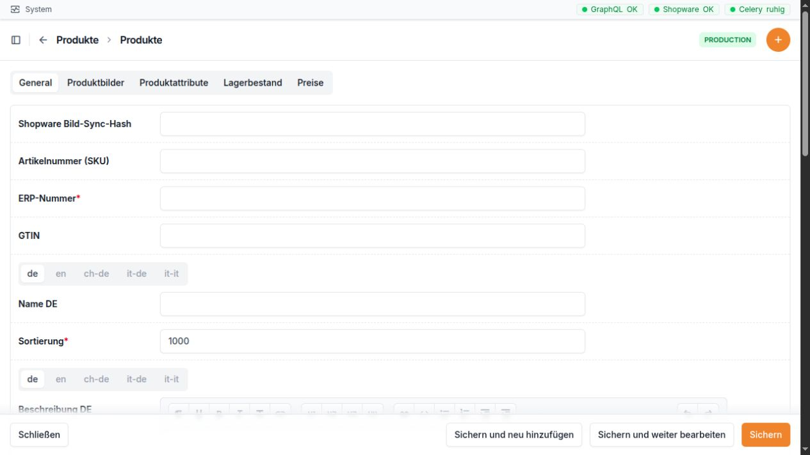

Produkte¶
Wofür ist dieser Bereich da?¶
Im Bereich Produkte pflegen und prüfen Sie die Produktdaten, die zwischen Microtech, der GC-Bridge und Shopware verwendet werden. Dazu gehören unter anderem Namen und Beschreibungen, Kategorien, Bilder, Videos, Attribute, Lagerbestand und Preise.
Die GC-Bridge ist dabei die Arbeits- und Kontrolloberfläche. Viele Grunddaten kommen aus Microtech. Änderungen können eine neue Übertragung nach Shopware oder Microtech auslösen. Arbeiten Sie deshalb bei Nummern, Preisen und Zuordnungen besonders sorgfältig.


Oben wechseln Sie zwischen Stammdaten, Bildern, Attributen, Lagerbestand und Preisen. Sprachabhängige Texte besitzen eigene Sprachreiter.
Die Produktliste¶
Die Produktliste zeigt nur Produkte, die nicht archiviert sind. Aktive Produkte stehen vor inaktiven Produkten; innerhalb dieser Gruppen wird nach ERP-Nummer sortiert.
Spalte |
Einfache Erklärung |
|---|---|
Bild |
Vorschau des ersten zugeordneten Produktbildes. Ein Klick öffnet das Produkt. |
ERP-Nummer |
Zentrale Artikelnummer aus dem Warenwirtschaftssystem. Ein Klick öffnet das Produkt. |
Name |
Produktbezeichnung. Ein Klick öffnet das Produkt. |
Verfügbarer Bestand |
Zeigt den virtuellen Bestand, wenn er größer als 0 ist. Sonst wird der normale Lagerbestand gezeigt. |
Aktiv |
Zeigt, ob das Produkt für die laufende Verwendung freigegeben ist. |
Angelegt am |
Zeitpunkt, zu dem das Produkt in der GC-Bridge angelegt wurde. |
Die Suche berücksichtigt ERP-Nummer, Artikelnummer (SKU) und Name.
Die Liste kann gefiltert werden nach:
aktiv oder inaktiv,
Steuer,
Kategorie,
Anlagedatum.
Aktionen in der Produktliste und im Produkt¶
Aktion |
Wirkung |
Wichtiger Hinweis |
|---|---|---|
Produkt komplett synchronisieren |
Liest beziehungsweise überträgt alle vorgesehenen Produktdaten einschließlich Bilder im vollständigen Ablauf Microtech → GC-Bridge → Shopware. |
Der Vorgang läuft im Hintergrund. Nicht mehrfach kurz hintereinander starten. |
Produkt ohne Bilder synchronisieren |
Synchronisiert Texte, Preise und weitere Produktdaten, lässt die Bilder aber aus. |
Geeignet, wenn Bilder unverändert bleiben sollen oder die Bildübertragung gerade nicht benötigt wird. |
Sonderpreis für Sales-Channel setzen |
Setzt für die markierten Produkte einen prozentualen Sonderpreis in einem ausgewählten Verkaufskanal. |
Verkaufskanal und Prozentwert sind Pflicht. Ein Enddatum darf nicht vor dem Startdatum liegen. Produkte ohne Preis in diesem Kanal werden übersprungen. |
Sonderpreis für Sales-Channel aufheben |
Entfernt Sonderpreis, Zeitraum und Prozentwert im ausgewählten Verkaufskanal. |
Vorher den richtigen Verkaufskanal auswählen. |
In Archiv verschieben |
Verschiebt markierte Produkte ins Produkt-Archiv und setzt sie gleichzeitig auf inaktiv. |
Kategorien, Preise, Bilder, Attribute und Bestände bleiben erhalten. |
AI an Textfeldern |
Öffnet eine Unterstützung zum Überarbeiten eines geeigneten Produkttextes. |
Ergebnis vor der Übernahme immer inhaltlich prüfen. |
Die beiden Synchronisationsaktionen und die Archivierung gibt es auch direkt auf der Detailseite eines Produkts.
Produkt anlegen oder bearbeiten¶
Stammdaten¶
Feld |
Bedeutung und richtige Verwendung |
|---|---|
Shopware Bild-Sync-Hash |
Interner Prüfwert für die Bildübertragung. Normalerweise nicht von Hand ändern. |
Artikelnummer (SKU) |
Artikelnummer für Shopware. Sie muss eindeutig sein, darf aber leer bleiben, wenn der Datensatz noch nicht vollständig ist. |
ERP-Nummer |
Pflichtfeld und eindeutige Artikelnummer aus Microtech. Eine falsche Änderung kann Zuordnungen und Übertragungen stören. |
GTIN |
Internationale Artikelnummer, zum Beispiel EAN. Kann leer bleiben, wenn keine GTIN vorhanden ist. |
Name |
Lesbare Produktbezeichnung. Sie wird in mehreren Sprachfassungen angeboten. |
Sortierung |
Zahl für die Reihenfolge. Kleinere Zahlen stehen üblicherweise weiter oben. Der Standardwert ist 1000. |
Beschreibung |
Ausführlicher Produkttext. Das Feld gibt es in mehreren Sprachfassungen. |
Kurzbeschreibung |
Kurzer Produkttext für Übersichten. Das Feld gibt es in mehreren Sprachfassungen. |
Aktiv |
Legt fest, ob das Produkt im laufenden Bestand verwendet werden soll. |
Archiviert |
Interne Archivkennzeichnung. Nutzen Sie zum Archivieren besser die vorgesehene Aktion In Archiv verschieben. |
Faktor |
Mengenfaktor des Produkts, zum Beispiel für eine Verpackungseinheit. |
Einheit |
Einheit wie Stück, Packung oder Meter. Das Feld gibt es in mehreren Sprachfassungen. |
Mindestabnahme |
Kleinste Menge, die bestellt werden kann. |
Kaufeinheit |
Schrittweite, in der weitere Mengen gekauft werden können. |
Statistische Warennummer |
Warennummer für Zoll- und Außenhandelszwecke. |
Bruttogewicht (kg) |
Gewicht einschließlich Verpackung in Kilogramm. |
Nettogewicht (kg) |
Gewicht ohne Verpackung in Kilogramm. |
Steuer |
Passender Steuersatz des Produkts. |
Kategorien |
Eine oder mehrere Kategorien, in denen das Produkt erscheinen soll. Archivierte Produkte werden bei neuen Zuordnungen nicht angeboten. |
Angelegt am |
Wird automatisch gesetzt. |
Aktualisiert am |
Wird bei Änderungen automatisch gesetzt. |
Für Name, Beschreibung, Kurzbeschreibung und Einheit stehen Sprachfassungen für Deutsch, Englisch, Schweizerdeutsch, Deutsch für Italien und Italienisch bereit. Pflegen Sie nur Texte, deren Sprache Sie sicher beurteilen können. Fehlende Sprachfassungen können je nach Einrichtung auf Deutsch oder Englisch zurückfallen.
Produktbilder¶
Im unteren Bereich des Produktes werden Bilder in einer Tabelle zugeordnet.
Feld |
Bedeutung |
|---|---|
Vorschau |
Zeigt das ausgewählte Bild klein an. |
Bild |
Auswahl eines bereits bekannten Bildes. |
Reihenfolge |
Legt fest, welches Bild zuerst kommt. Das erste Bild wird auch in der Produktliste gezeigt. |
Ein Bild selbst besitzt die Felder Bildpfad und Alternativtext. Der Alternativtext beschreibt den Bildinhalt für barrierearme Ausgaben. Bilder werden über einen Pfad oder eine vollständige Webadresse geladen; sie werden in diesem Formular nicht als neue lokale Bilddatei hochgeladen.
Produktvideos¶
Feld |
Bedeutung |
|---|---|
Video |
Auswahl eines vorhandenen Vimeo-Videos. |
Position |
Reihenfolge der Videos am Produkt. Kleinere Zahlen stehen zuerst. |
Aktiv |
Legt fest, ob diese Zuordnung verwendet wird. |
Ein Video besitzt Titel, Vimeo-ID oder URL, den bei nicht öffentlichen Vimeo-Links benötigten Privacy-Hash, ein optionales Vorschaubild und Aktiv. Sie können eine reine Vimeo-Nummer oder eine gültige Vimeo-HTTPS-Adresse eintragen. Beim Speichern wird daraus die reine Nummer übernommen. Der Privacy-Hash wird aus einem passenden nicht öffentlichen Link automatisch gelesen.
Produktattribute¶
Feld |
Bedeutung |
|---|---|
Gruppe |
Wird aus dem gewählten Attributwert angezeigt, zum Beispiel „Farbe“. |
Attributwert |
Konkreter Wert, zum Beispiel „Rot“. |
Dasselbe Produkt darf denselben Attributwert nicht doppelt erhalten. Attribute werden auch für Variantenfamilien verwendet.
Lagerbestand¶
Feld |
Bedeutung |
|---|---|
Bestand |
Tatsächlicher Lagerbestand. Dezimalwerte sind möglich. |
Virtueller Bestand |
Manuell vorgegebener Bestand. Ist dieser Wert größer als 0, wird er anstelle des normalen Bestands verwendet. |
Lagerort |
Freie Angabe zum Lagerplatz. |
Wichtig: Der virtuelle Bestand 0 überschreibt den normalen Bestand nicht. Für Shopware wird ein Bestand mit Nachkommastellen vorsichtig auf die nächste ganze Zahl nach unten abgerundet.
Preise am Produkt¶
Jeder Preis gehört zu genau einem Produkt und einem Verkaufskanal. Pro Verkaufskanal darf es nur einen Preiseintrag geben.
Feld |
Bedeutung und richtige Verwendung |
|---|---|
Verkaufskanal |
Shopware-Kanal, für den der Preis gilt. In der Auswahl stehen aktive Kanäle; der Standardkanal erscheint zuerst. |
Preis |
Regulärer Preis. |
Sonderpreis (%) |
Prozentualer Nachlass. Bei einer Eingabe berechnet die Bridge den Sonderpreis automatisch und rundet auf 5 Cent auf. |
Sonderpreis ab |
Beginn des Angebots. Ohne Angabe wird beim Setzen eines Prozentsatzes der aktuelle Zeitpunkt verwendet. |
Sonderpreis bis |
Ende des Angebots. Ohne Angabe setzt die Bridge das Ende des folgenden Monats. |
Sonderpreis |
Berechneter Preis. In der Produkttabelle ist er nur zur Kontrolle sichtbar. |
Sonderpreis aktiv |
Zeigt, ob der aktuelle Zeitpunkt innerhalb des Angebotszeitraums liegt. |
Staffelmenge |
Menge, ab der ein Staffelpreis gilt. |
Staffelpreis |
Preis für die angegebene Staffelmenge. |
Verlauf |
Link zum Preis und zu seinen bisherigen Änderungen. |
Bei jeder tatsächlichen Änderung eines Preisfeldes wird automatisch ein Eintrag im Preisverlauf angelegt. Er enthält den Änderungstyp, die geänderten Felder und die damaligen Preiswerte. Der Preisverlauf dient nur zur Kontrolle und kann nicht von Hand angelegt oder geändert werden.
Preise als eigene Liste¶
Die Liste Preise zeigt Produkt, Verkaufskanal, Preis, Sonderpreis-Prozent, Sonderpreis, den aktuellen Angebotsstatus, Staffelpreis und Anlagedatum. Sie können nach Produktname, ERP-Nummer oder Verkaufskanal suchen und nach Verkaufskanal, Preisbereich und Anlagedatum filtern.
In dieser Liste stehen zwei Sammelaktionen zur Verfügung:
Sonderpreis setzen (%): Prozentwert sowie optional Start und Ende eintragen; anschließend die markierten Preise ändern.
Sonderpreis aufheben: entfernt den Sonderpreis der markierten Preise.
Ein Enddatum vor dem Startdatum wird abgewiesen. Prüfen Sie vor einer Sammelaktion stets, ob wirklich die richtigen Preise und Verkaufskanäle markiert sind.
Kategorien verwalten¶
Die Kategorienseite besteht aus zwei großen Bereichen:
links der Kategoriebaum,
rechts die Produktzuordnung der ausgewählten Kategorie.
Im Baum können Sie Kategorien suchen, auf- und zuklappen und – mit passenden Rechten – per Ziehen verschieben. Eine Kategorie kann vor, hinter oder in eine andere Kategorie verschoben werden. Die Bridge verhindert, dass eine Kategorie in sich selbst oder in eine eigene Unterkategorie verschoben wird.
Nach Auswahl einer Kategorie zeigt die rechte Seite die bereits zugeordneten Produkte. Über das Suchfeld können Sie weitere Produkte ab zwei eingegebenen Zeichen finden und hinzufügen. Bereits zugeordnete Produkte können entfernt werden. Archivierte Produkte werden hier nicht als neue Auswahl angeboten.
Felder einer Kategorie¶
Feld |
Bedeutung und richtige Verwendung |
|---|---|
Name |
Kategoriename. Er steht in mehreren Sprachfassungen zur Verfügung. Bei gleichnamigen Unterkategorien wird in Auswahlen zusätzlich die oberste Kategorie gezeigt. |
Slug |
Eindeutiger kurzer Bestandteil für Adressen. Nur mit Bedacht ändern. |
Shopware 6 ID |
Eindeutige Kennung aus Shopware 6. Normalerweise durch die Synchronisation gepflegt. |
SKU / Shopware-ID |
Weitere Shopware-Zuordnung, falls verwendet. |
Oberkategorie |
Übergeordnete Kategorie. In der Baumansicht lässt sich diese Zuordnung einfacher erkennen und ändern. |
Legacy ERP-Nummer |
Alte ERP-Nummer. Nur zur Information. |
Legacy API-ID |
Alte Schnittstellenkennung. Nur zur Information. |
Legacy Parent ERP-Nummer |
Alte Nummer der Oberkategorie. Nur zur Information. |
Bild |
Pfad oder Kennung des Kategoriebildes. |
Kurzbeschreibung (HTML) |
Kurzer Kategorietext. Mehrsprachig. |
Beschreibung (HTML) |
Ausführlicher Kategorietext. Mehrsprachig. |
SEO-Meta-Titel |
Titel für Suchmaschinen. Mehrsprachig. |
SEO-Meta-Beschreibung |
Kurzbeschreibung für Suchmaschinen. Mehrsprachig. |
SEO-Keywords |
Suchbegriffe, sofern weiterhin verwendet. Mehrsprachig. |
Aktiv |
Die Kategorie wird fachlich verwendet. |
Sichtbar |
Die Kategorie soll im Shop beziehungsweise in sichtbaren Ausgaben erscheinen. Aktiv und sichtbar sind getrennte Angaben. |
Legacy geändert am |
Letzter Änderungszeitpunkt aus dem alten System. |
Sortierung |
Reihenfolge unter derselben Oberkategorie. In der Baumansicht wird sie beim Verschieben passend neu gesetzt. |
Angelegt am / Aktualisiert am |
Automatische Zeitangaben. |
Für Textfelder einer Kategorie gibt es dieselben fünf Sprachfassungen wie bei Produkten. Bei geeigneten Textfeldern erscheint außerdem eine AI-Schaltfläche zur Textüberarbeitung.
Produkt-Archiv¶
Das Produkt-Archiv zeigt ausschließlich archivierte Produkte. Ein Produkt wird beim Archivieren automatisch deaktiviert. Seine Kategorien, Bilder, Videos, Attribute, Preise und Bestände bleiben erhalten.
Mit Aus Archiv wiederherstellen wird nur die Archivkennzeichnung entfernt. Das Produkt bleibt zunächst inaktiv. Prüfen Sie es danach in der normalen Produktliste und aktivieren Sie es bewusst, wenn es wieder verwendet werden soll.
Im Archiv können keine neuen Produkte angelegt werden. Synchronisations- und Sonderpreisaktionen sind dort absichtlich nicht verfügbar.
Attributgruppen und Attributwerte¶
Attributgruppe¶
Feld |
Bedeutung |
|---|---|
Externe Referenz |
Kennung aus einem anderen System. Normalerweise nicht frei erfinden. |
Shopware Attributgruppen-ID |
Kennung der Gruppe in Shopware. |
Name |
Name der Gruppe, zum Beispiel „Farbe“. Mehrsprachig. |
Angelegt am / Aktualisiert am |
Automatische Zeitangaben. |
Attributwert¶
Feld |
Bedeutung |
|---|---|
Externe Referenz |
Kennung aus einem anderen System. |
Shopware Attributwert-ID |
Kennung des Wertes in Shopware. |
Attributgruppe |
Gruppe, zu der der Wert gehört. |
Wert |
Konkreter Wert, zum Beispiel „Blau“. Mehrsprachig. Innerhalb einer Gruppe darf derselbe Name nicht doppelt vorkommen. |
Position |
Reihenfolge innerhalb der Gruppe und in Shopware. |
Auswahlbild |
Optionales Bild für eine Variantenwahl mit Bildern. |
Produkte |
Produkte, denen dieser Wert zugeordnet ist. Mehrere Produkte können gemeinsam ausgewählt werden. |
Angelegt am / Aktualisiert am |
Automatische Zeitangaben. |
Variantenfamilien¶
Eine Variantenfamilie bildet in Shopware ein übergeordnetes Produkt. Die tatsächlich verkauften Varianten bleiben normale Produkte mit eigenen ERP-Nummern.
Feld |
Bedeutung und richtige Verwendung |
|---|---|
Shopware Parent-Name |
Gemeinsamer sichtbarer Name der Variantenfamilie. Mehrsprachig. |
Technischer Schlüssel |
Eindeutiger kurzer Schlüssel der Familie. |
Shopware Parent-Beschreibung |
Gemeinsamer Beschreibungstext. Mehrsprachig. |
Shopware Parent-Artikelnummer |
Eindeutige technische Artikelnummer nur für Shopware. Sie besitzt kein Gegenstück in Microtech. |
Shopware Parent-ID |
Kennung des bereits angelegten übergeordneten Shopware-Produkts. |
Aktiv |
Legt fest, ob die Familie verwendet werden soll. |
Shopware Zielkategorie |
Kategorie, in der nur das übergeordnete Variantenprodukt sichtbar sein soll. |
Quellkategorien |
Kategorien, aus denen aktive Einzelprodukte als mögliche Varianten gelesen werden. |
Standardvariante |
Produkt, das Shopware zunächst zeigt. Es muss aus einer ausgewählten Quellkategorie stammen. |
Gewünschter SEO-Pfad |
Vorgabe für eine spätere Shopware-Adresse. Die tatsächliche Freigabe der SEO-Adresse erfolgt nicht allein durch dieses Feld. |
Unter der Familie werden die Variantenattribute gepflegt:
Feld |
Bedeutung |
|---|---|
Attributgruppe |
Merkmal, nach dem gewählt wird, zum Beispiel Farbe oder Format. Jede Gruppe darf je Familie nur einmal vorkommen. |
Position |
Reihenfolge der Auswahlmöglichkeiten. |
Darstellung in Shopware |
Auswahl zwischen Text, Farbe und Bild. |
Ersatzwert bei fehlendem Attribut |
Wert, der benutzt wird, wenn ein Produkt dieses Merkmal nicht besitzt, zum Beispiel „Ohne Aufdruck“. Der Ersatzwert muss zur gewählten Attributgruppe gehören. |
Die Liste zeigt Name, Shopware-Parent-Artikelnummer, Zielkategorie, Zahl der Quellkategorien, Aktiv-Status und Anlagedatum.
Preiserhöhungen¶
Eine Preiserhöhung ist ein kontrollierter Arbeitsvorgang. Beim Anlegen werden die Preise des aktiven Standard-Verkaufskanals als Positionen eingelesen. Danach prüfen oder ändern Sie die vorgeschlagenen Zielpreise. Erst die Aktion Preiserhöhung übernehmen ändert die Standardpreise.
Felder der Preiserhöhung¶
Feld |
Bedeutung und richtige Verwendung |
|---|---|
Titel |
Eindeutige Bezeichnung, zum Beispiel „Preiserhöhung Oktober 2026“. Ein Monat und Jahr im Titel können für das Deckblatt der Preisliste verwendet werden. |
Status |
Entwurf oder Übernommen. Wird durch den Ablauf gepflegt. |
Standard-Verkaufskanal |
Kanal, dessen Preise als Grundlage dienen. Wird automatisch aus dem aktiven Standardkanal gewählt und nur angezeigt. |
Generelle Erhöhung (%) |
Prozentwert für den Preisvorschlag. Voreinstellung ist 2,50 %. |
Preislisten-Vorlage |
Aktive Dokumentvorlage vom Typ Preisliste. Sie ist für das Jahresdokument erforderlich. |
Erzeugte Preisliste |
Link zum bereits aus dieser Preiserhöhung erzeugten Dokument. |
Positionen |
Anzahl der eingelesenen Preispositionen. |
Positionen synchronisiert am |
Zeitpunkt des letzten Neuladens der Produkte und Preise. |
Übernommen am |
Zeitpunkt, an dem die neuen Preise endgültig übernommen wurden. |
Hinweis zur Wiederherstellung |
Warnt davor, dass direkte Sonderpreise bei einer Wiederherstellung gelöscht werden; prozentuale Sonderpreise werden neu berechnet. |
Angelegt am / Aktualisiert am |
Automatische Zeitangaben. |
Positionen bearbeiten¶
Die Positionstabelle zeigt unter anderem ERP-Nummer, Produktname, bisherigen Preis, Staffelmenge, bisherigen Staffelpreis, Einheit, Vorschlag, neuen Preis, neuen Staffelpreis, Preisverlauf und – sofern vorhanden – einen Mappei-Vergleich.
Feld |
Bedeutung |
|---|---|
Aktueller Preis |
Beim Einlesen festgehaltener Ausgangspreis. |
Aktuelle Staffelmenge |
Bisherige Menge für den Staffelpreis. |
Aktueller Staffelpreis |
Bisheriger Preis ab der Staffelmenge. |
Neuer Preis |
Tatsächlicher Zielpreis. Bleibt das Feld leer, gilt der grau angezeigte Vorschlag aus dem allgemeinen Prozentwert. |
Neuer Staffelpreis |
Tatsächlicher neuer Staffelpreis. Auch hier kann der Vorschlag verwendet werden. |
Letzter Status |
Rückmeldung zur letzten Bearbeitung der Zeile. |
Letzte Änderung durch / am |
Zeigt, wer die Position zuletzt geändert hat und wann. |
Die Bridge rundet neue Preise auf den nächsten 5-Cent-Schritt auf. Ein neuer Staffelpreis muss unter dem neuen normalen Preis liegen. Auffällige Preissprünge oder unpassende Staffelwerte werden als Warnung oder Fehler gezeigt. Gespeichert wird erst über die Schaltfläche Speichern. Die Suche beginnt ab drei Zeichen und findet ERP-Nummern und Produktnamen.
Aktionen einer Preiserhöhung¶
Aktion |
Wirkung und Hinweis |
|---|---|
PDF Bestellschein |
Erstellt einen Bestellschein als PDF. In der Listenaktion muss genau eine Preiserhöhung markiert sein. |
Produkte neu laden |
Liest aktuelle Preise des Standard-Verkaufskanals neu ein, entfernt entfallene Positionen und behält manuell gesetzte Zielpreise. Nach der Übernahme ist diese Aktion gesperrt. |
Preiserhöhung übernehmen |
Schreibt die geprüften Zielpreise als neue Standardpreise. Positionen mit sperrenden Prüfungsfehlern verhindern die Übernahme. |
Preisliste für aktuelles Jahr anlegen |
Erzeugt aus der gewählten Vorlage ein neues Dokument und öffnet es im Dokumentbereich. |
Microtech Preise nachschreiben |
Reiht die Preise der übernommenen Positionen zur Aktualisierung von VK0/VK1 in Microtech ein. Erst nach der Übernahme möglich. |
Preise wiederherstellen und synchronisieren |
Stellt die vor der Preiserhöhung gespeicherten Preise wieder her und reiht die erneute Synchronisation ein. Direkte Sonderpreise gehen dabei verloren; prozentuale werden neu berechnet. |
Typischer Ablauf bei einem einzelnen Produkt¶
Öffnen Sie Produkte → Produkte.
Suchen Sie nach ERP-Nummer, SKU oder Name.
Öffnen Sie das Produkt und prüfen Sie zuerst ERP-Nummer, Aktiv-Status und Kategorien.
Ändern Sie nur die benötigten Felder. Prüfen Sie bei Texten die richtige Sprache.
Kontrollieren Sie Bilder, Videos, Attribute, Lagerbestand und Preise in den Tabellen darunter.
Speichern Sie das Produkt.
Nutzen Sie je nach Bedarf Produkt komplett synchronisieren oder Produkt ohne Bilder synchronisieren.
Warten Sie die Rückmeldung ab und prüfen Sie das Ergebnis in Shopware. Ein Hintergrundlauf kann etwas Zeit benötigen.
Häufige Hinweise und Fehlerquellen¶
Produkt ist nicht mehr in der Liste: Es wurde möglicherweise archiviert. Im Produkt-Archiv nach ERP-Nummer oder Name suchen.
Wiederhergestelltes Produkt bleibt unsichtbar: Beim Wiederherstellen bleibt es inaktiv. Danach in der normalen Produktliste bewusst auf Aktiv setzen.
Bildvorschau fehlt: Prüfen Sie Bildzuordnung, Bildpfad und Reihenfolge. Das erste gültige Bild wird als Vorschau verwendet.
Falsches Bild steht vorne: In der Tabelle Produktbilder die Reihenfolge korrigieren.
Video-Adresse wird abgewiesen: Nur eine numerische Vimeo-ID oder eine gültige öffentliche beziehungsweise nicht öffentliche Vimeo-HTTPS-Adresse verwenden.
Bestand stimmt in Shopware nicht: Ein virtueller Bestand größer als 0 überschreibt den normalen Bestand. Außerdem werden Nachkommastellen für Shopware abgerundet.
Sonderpreis ist nicht aktiv: Start, Ende und berechneten Sonderpreis prüfen. Der aktuelle Zeitpunkt muss innerhalb des Zeitraums liegen.
Sonderpreis-Aktion überspringt Produkte: Für den gewählten Verkaufskanal fehlt bei diesen Produkten ein Preiseintrag.
Kategorie ist in einer Auswahl nicht eindeutig: Bei gleichnamigen Unterkategorien zeigt die Auswahl zusätzlich die oberste Kategorie, zum Beispiel „Deutschland | Ordner“.
Kategorie lässt sich nicht verschieben: Eine Kategorie darf nicht in sich selbst oder in eine eigene Unterkategorie geschoben werden.
Produkt erscheint nicht bei der Kategorie-Suche: Mindestens zwei Zeichen eingeben; archivierte Produkte werden nicht angeboten.
Standardvariante wird abgewiesen: Sie muss ein aktives Produkt aus einer der gewählten Quellkategorien sein.
Ersatzwert einer Variante wird abgewiesen: Der Ersatzwert muss zur gewählten Attributgruppe gehören.
Preiserhöhung lässt sich nicht übernehmen: In den Positionen gibt es noch sperrende Preis- oder Staffelprüfungen.
Neu geladene Preiserhöhungs-Positionen sehen anders aus: Ausgangspreise wurden aktualisiert; bereits manuell gesetzte Zielpreise bleiben erhalten.
Synchronisation mehrfach gestartet: Hintergrundläufe können zeitversetzt erscheinen. Erst Rückmeldung und Synchronisationsstatus prüfen, bevor ein weiterer Lauf gestartet wird.
Nummern und Kennungen: ERP-Nummer, SKU, Shopware-IDs und externe Referenzen nicht ohne geklärten Grund ändern.
Praxisbeispiel 1: Produkttext und Bild korrigieren und nach Shopware übertragen¶
Beim Produkt mit der ERP-Nummer 710045 ist die deutsche
Kurzbeschreibung veraltet. Außerdem soll ein neues Bild an erster Stelle
stehen.
Öffnen Sie Produkte → Produkte.
Suchen Sie nach
710045und öffnen Sie den Treffer.Prüfen Sie, ob Aktiv gesetzt ist und ob Name und Kategorien zum Artikel passen.
Wechseln Sie beim Feld Kurzbeschreibung zur deutschen Sprachfassung und ändern Sie nur den veralteten Text.
Gehen Sie zur Tabelle Produktbilder.
Wählen Sie das gewünschte Bild aus. Tragen Sie dafür bei Reihenfolge den Wert
1ein.Geben Sie den übrigen Bildern größere Reihenfolgenummern, damit keine unklare Reihenfolge entsteht.
Speichern Sie das Produkt und prüfen Sie, ob das neue Bild jetzt in der Produktliste als Vorschau erscheint.
Öffnen Sie das Produkt erneut und wählen Sie Produkt komplett synchronisieren, weil auch das Bild übertragen werden soll.
Warten Sie die Rückmeldung ab und kontrollieren Sie in Shopware den deutschen Kurztext und das erste Bild.
Ergebnis: Der Text wurde in der richtigen Sprachfassung geändert, das gewünschte Bild steht vorne und der vollständige Produktstand wurde zur Übertragung eingereiht.
Praxisbeispiel 2: Geprüfte Preiserhöhung mit Preisliste durchführen¶
Zum Oktober 2026 sollen die Standardpreise grundsätzlich um 2,5 % steigen. Einige wichtige Produkte brauchen abweichende Zielpreise.
Öffnen Sie Produkte → Preiserhöhungen und legen Sie einen neuen Eintrag an.
Tragen Sie als Titel „Preiserhöhung Oktober 2026“ und bei Generelle Erhöhung (%) den Wert
2,50ein.Wählen Sie eine aktive Preislisten-Vorlage und speichern Sie.
Prüfen Sie die Meldung zur Zahl der eingelesenen Preispositionen.
Öffnen Sie den Bereich Positionen. Suchen Sie wichtige Artikel über mindestens drei Zeichen der ERP-Nummer oder des Namens.
Lassen Sie den grauen Vorschlag stehen, wenn die allgemeine Erhöhung passt. Tragen Sie nur bei den abweichenden Artikeln einen Neuen Preis oder Neuen Staffelpreis ein.
Speichern Sie die geänderten Positionen. Beheben Sie rote Fehler; prüfen Sie gelbe Warnungen bewusst.
Nutzen Sie Produkte neu laden, wenn sich seit dem Anlegen Ausgangspreise geändert haben. Prüfen Sie danach nochmals die Positionen.
Wählen Sie Preisliste für aktuelles Jahr anlegen. Prüfen Sie das neue Dokument im Dokumentbereich und erzeugen Sie dort zunächst eine Vorschau.
Gehen Sie zurück zur Preiserhöhung und wählen Sie erst nach der fachlichen Freigabe Preiserhöhung übernehmen.
Wählen Sie anschließend Microtech Preise nachschreiben und kontrollieren Sie die Übertragung.
Ergebnis: Die Standardpreise wurden erst nach einer vollständigen Positionsprüfung geändert. Die zugehörige Preisliste bleibt als eigenes Dokument nachvollziehbar.